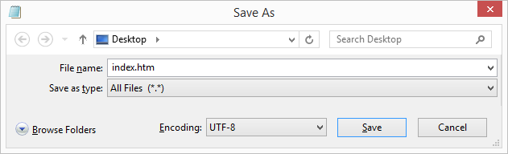

Editores HTML
Un simple editor de texto es todo lo que necesitas para aprender HTML.
Aprende HTML usando Bloc de notas o TextEdit
Las páginas web pueden ser creadas y modificadas usando editores HTML profesionales. Sin embargo, para aprender HTML recomendamos un simple editor de texto como Bloc de notas (PC) o TextEdit (Mac). Creemos que usando un simple edito de texto es una buena forma de aprender HTML. A continuación, sigue los pasos para crear tu primera página web con Bloc de notas o TextEdit.
Paso 1: Abre Bloc de notas (PC)
Windows 8 o superior:
Presiona la tecla Windows. Escribe Bloc de notas.
Windows 7 o anterior:
Abre Inicio > Programas > Accesorios > Bloc de notas
Paso 1: Abre TextEdit (Mac)
Presiona Finder > Aplicaciones > TextEdit
También cambie algunas preferencias para que la aplicación guarde los archivos correctamente. En Preferencias > Formato > elija "Texto sin formato"
Luego, en "Abrir y guardar", marque la casilla que dice "Mostrar archivos HTML como código HTML en lugar de texto con formato".
Luego abra un nuevo documento para colocar el código.
Paso 2: Escribe un poco de HTML
Escribe o copia el siguiente código HTML dentro del bloc de notas:
<!DOCTYPE html>
<html>
<body>
<h1>Mi primer encabezado</h1>
<p>Mi primer párrafo.</p>
</body>
</html>

Paso 3: Guarda la página HTML
Guarda el archivo en tu computadora. Selecciona **Archivo > Guardar como ** en el menú Bloc de notas.
Nombra el archivo "index.html" y establece Encoding UTF-8 (que es la codificación preferida para archivos HTML).

Consejo: Puedes utilizar la extensión del archivo
.htmo.html. No hay diferencia, tú decides.
Paso 4: Ver la página HTML en tu navegador
Abre el archivo HTML guardado en tu navegador favorito (Haz doble clic en el archivo o haz clic derecho y seleccione "Abrir con").
El resultado se parecerá más o menos a esto:

W3Schools editor en línea - "Prueba tú mismo"
Con nuestro editor en línea gratuito, puedes editar el código HTML y ver el resultado en el navegador.
Es la herramienta perfecta cuando desea probar código rápidamente. También tiene codificación por colores y la capacidad de guardar y compartir código con otros:
Ejemplo
<!DOCTYPE html>
<html>
<head>
<title>Título de la página</title>
</head>
<body>
<h1>Este es un encabezado</h1>
<p>Este es un párrafo.</p>
</body>
</html>
Haz clic en el bóton "Prueba tú mismo" para ver cómo funciona.